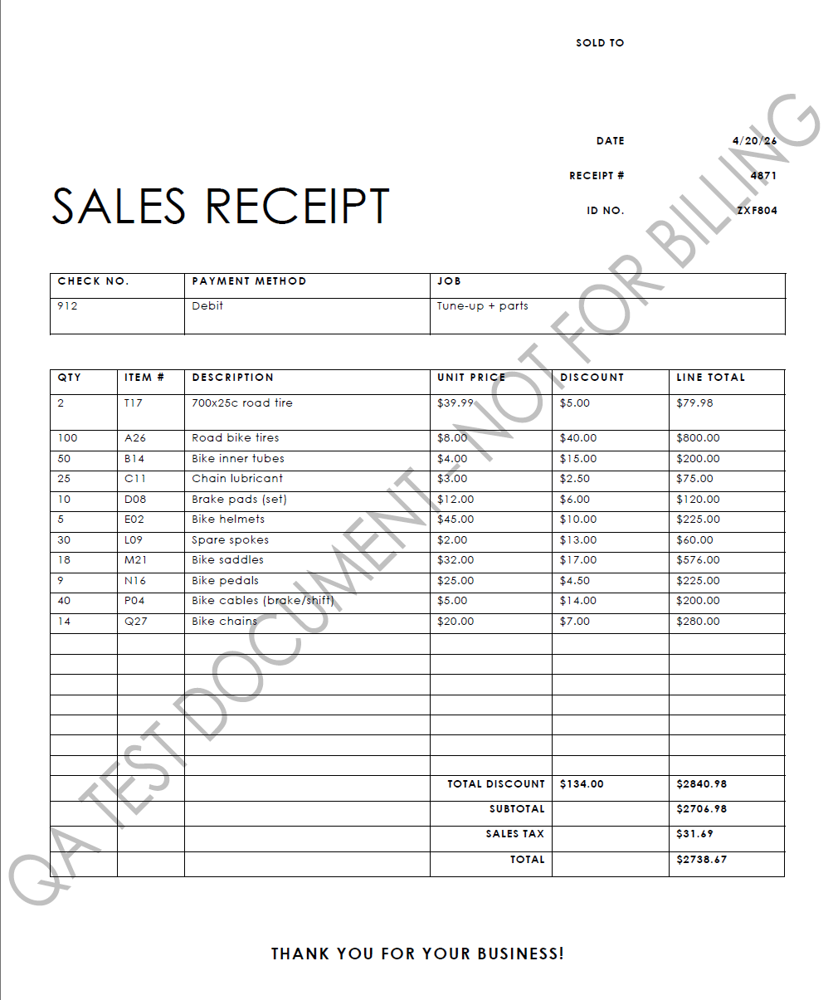
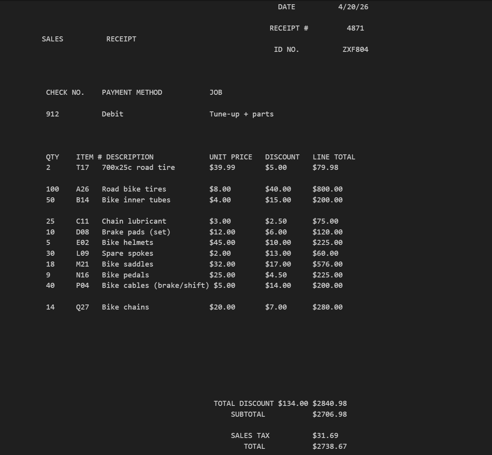
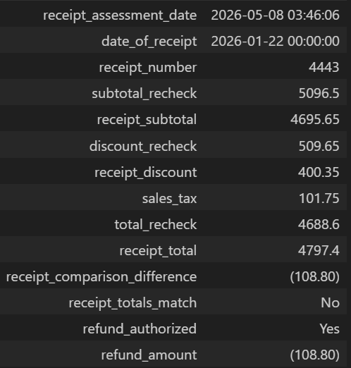
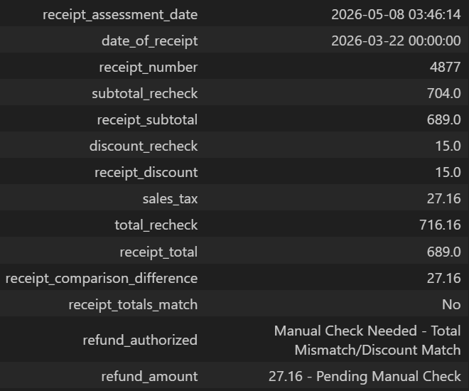
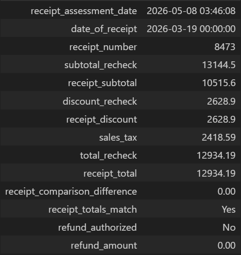

Refund Processing
PDF Data Extraction

Overview
A company is seeking to amend their sales dispute process by having their large bulk customers submit their sales disputes with PDF copies of their sales receipts that were inserted with their deliveries. The primary complaint is that the discounts that they were toreceive were miscalculated resulting in an incorrect total amount paid. Customers are seeking refunds and/or credits for the difference. In order to mitigate the manual processing of these claims, the company seeks to have these incoming PDFs processed automatically to approve, reject and flag for manual review claims appropriately based on parameters given. The output will then be returned in Excel spreadsheets for record keeping and exception review.
About the dataset
The dataset contains 18 PDF files of mock sales receipts. Each receipt contains the following information: Date, Receipt #, ID No., Check No., Payment Method, Job, Quantity (QTY), Item #, Description, Unit Price, Discount, Line Total and Sales Tax. The dataset is representative of the actual receipt data that would be submitted by customers. The data was generated using a prompt fed into Microsoft CoPilot to create the textual data. Field and numerical values were manually adjusted to test the various logic conditions and simulate real-world scenarios (e.g., duplicates and missing values, miscalculated totals). Receipt #, ID No., and Check No. are used to identify unique and required values.
Data Extraction
The text and table data in these PDF files were retrieved using the Python library pdfplumber. The table extraction captures the Quantity (QTY), Item #, Description, Unit Price, Discount, and Line Total values. This table extraction excluded the Date, Receipt #, ID No., Check No., Payment Method and Job values. This excluded data was extracted using regex (regular expression) patterns.
Image of sales receipt pdf

Image of sales receipt text extraction

Data Transformation
Once the table and textual data are extracted, they are combined into a single dataframe to represent each item of each individual receipt labeled receipt_detail_check. The values include the Date, Receipt #, ID No., Check No., Quantity (QTY), Item #, Description, Unit Price, Discount, and Line Total. The discount and line total values are then recalculated and then compared directly to values printed on the PDF to determine whether or not a refund/credit is warranted and of what amount.
Receipt Comparison
The Receipt Comparison dataframe houses the recalculated values shown on the receipt and compares them with what was printed on the PDF. Based on the logic written in the code, an assessment on whether or not a refund/credit is warranted will be determined and of what amount.
- subtotal_recheck (recalculated) >>> Recalculated (sum) value of each Line Total (value does not included the discount value).
- receipt_subtotal (original, printed value) >>> Value printed on the PDF receipt. This value includes the discount value (Line Totals minus Total Discount on the printed PDF value).
- discount_recheck (recalculated) >>> Recalculated (sum) value of discounts shown on printed PDF receipt.
- receipt_discount (original, printed value) >>> Value (Total Discount) printed on the PDF receipt.
- total_recheck (recalculated) >>> Recalculated total value. This value includes the subtotal_recheck minus the discount_recheck plus the Sales Tax value printed on the PDF receipt.
- receipt_total (original, printed value) >>> Value printed on the PDF receipt. This value is the subtotal plus the Sales Tax printed on PDF receipt (Total Discount already deducted).
- receipt_comparison_difference >>> Difference between total_recheck value and receipt total value.
The first check compares the recalculated total against the printed total in the Receipt Comparison dataframe. The second check compares the recalculated discount total against the printed discount total.
The below table visualizes and explains the reasoning used and the following images depict Approved, Rejected and Manual Check decisions.
| Total Recheck Matches Receipt Total |
Discount Recheck Matches Receipt Discount |
Refund Authorized |
Refund Amount (if applicable) |
|---|---|---|---|
| Yes | Yes | No | None |
| Yes | No | Manual Check Needed - Total Match/Discount Mismatch | Receipt Difference - Pending Manual Check |
| No | Yes | Manual Check Needed - Total Mismatch/Discount Match | Receipt Difference - Pending Manual Check |
| No | No | Yes | Receipt Difference |
Approved

Manual Check

Rejected

Accounting for duplicates and missing values
Additional measures were implemented before authorizing any refund/credit approvals to account for duplicates and missing values in the dataset. Since receipt numbers are unique, updates have been made to identify and flag missing and duplicate receipt numbers (indicated by " - D" next to the receipt number), and if found and tag for manual review. An update has also been made to flag and tag receipts with missing receipt dates.
Results
As seen, receipts with duplicate receipt numbers have been correctly identified and flagged for manual review. It takes the first instance of a receipt number as the original and any subsequent instance of the same receipt number is flagged as a duplicate as seen with receipt number 8473. In the first instance, the refund/credit is declined and the second (duplicate - 8473 - D) is flagged for manual review. Receipts with missing receipt dates and receipt numbers have also been correctly flagged as well and show as such in the refund_authorized columns.
Data Loading
The receipt meta, receipt comparison and receipt details are then written to an Excel file using the xlsxwriter Python module. The Excel spreadsheet is formatted to display all of the data on one sheet for convenience. The second sheet contains an exact copy of the Receipt Detail Check, containing the quantity, item number, item description, unit price, discount and line total. The load process also includes a separate consolidated workbook that includes all of the receipt data processed.
Receipt Assessment (Loading Output to Excel)
Limitations and Opportunities for Improvement
Although the mock up program works as intended it is limited that it not designed to handle scanned PDFs should they occur (a different approach would be needed). In addition, this mock up program only compares the receipt data against itself, recalculating the values for accuracy. It would be improved by checking against the company's internal records as well as the received documents. Handling missing values in other fields (customer_id_no, check_no, and payment_method) could also improve its functionality and efficiency.
PDF datasets, Excel file output, and Python code can be found on my Github here.